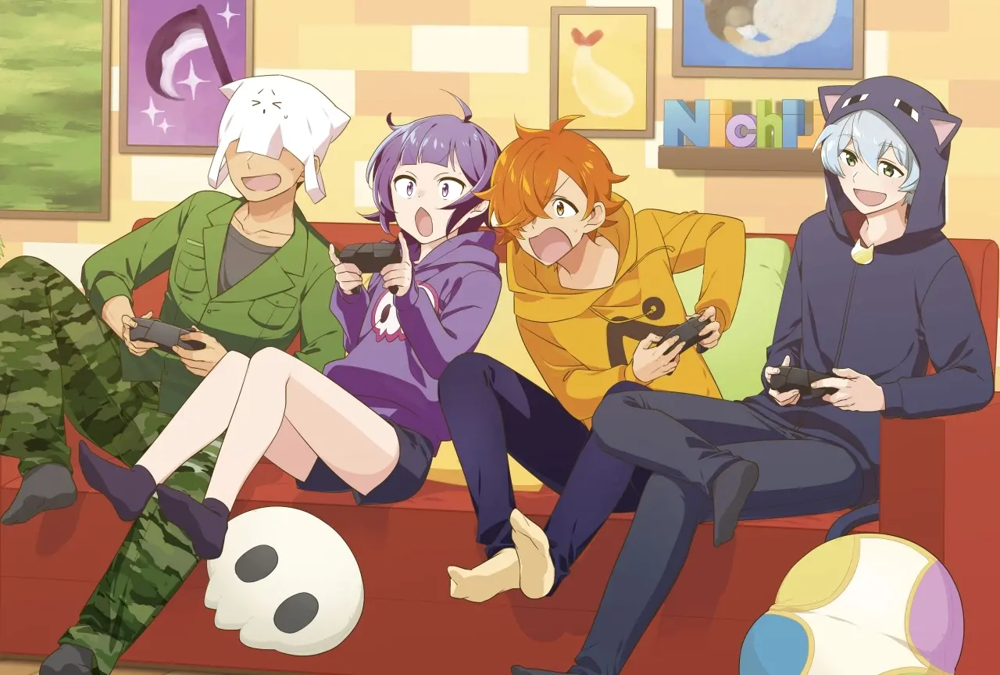

「日常組（にちじょうぐみ）」は、ぺいんと、クロノア、しにがみ、トラゾーの4人からなる大人気ゲーム実況グループです。
主な活動の場はYouTubeで、特に『Minecraft（マインクラフト）』の実況動画で知られています。人気の理由は、メンバー同士がまるで友だちのように仲良く掛け合い、動画の中で「茶番」と呼ばれるコミカルなやり取りやストーリーを展開する点にあります。
代表的なシリーズには「マイクラ脱獄」シリーズや「マイクラ盗賊」シリーズなど、独自の物語性を持った企画が多く、多くのファンを魅了しています。YouTubeチャンネルの登録者数は245万人を超えており（2025年5月時点）、幅広い層から支持されています。
個人的なおすすめは「マインクラフターの日常」シリーズの動画で、日常組初めての人でも楽しめるのでここから見始めていくのがおすすめです!!